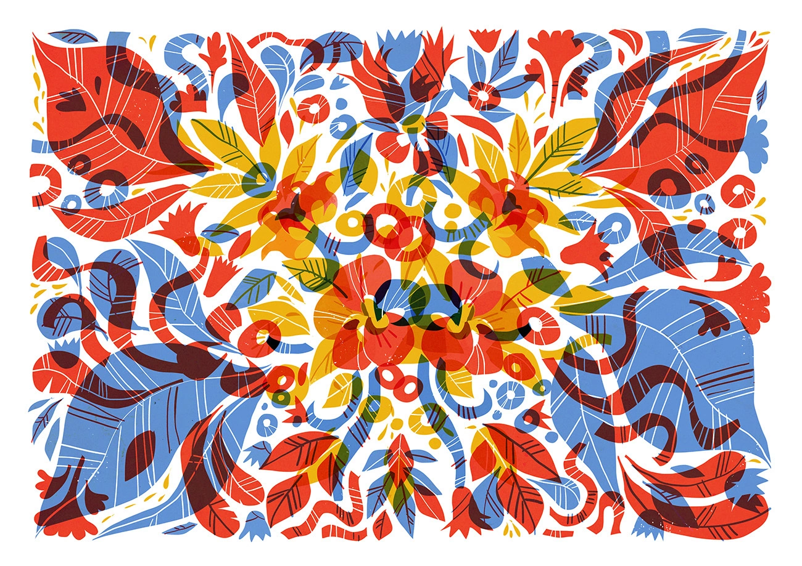
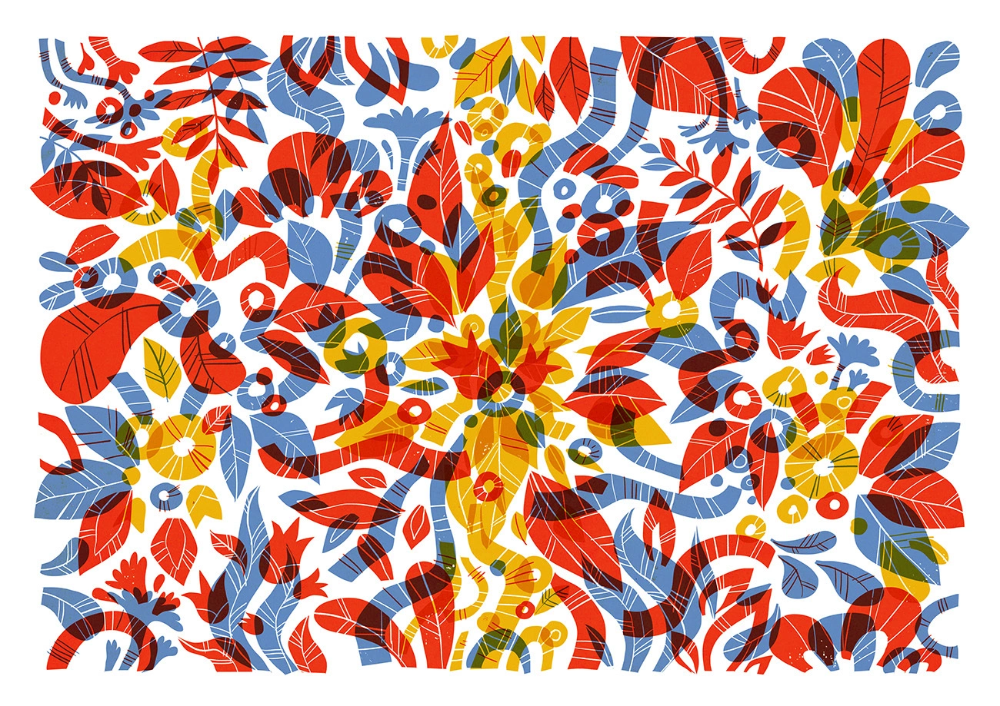

Plakáty vytvořené pro výstavu absolventů ateliéru animace na FMK Univerzity Tomáše Bati ve Zlíně. Plakáty
byly také vystaveny od srpna do října 2019 v Café Klášter v Napajedlích.
Technika: digitální kresba, sítotisk
Datum vzniku: 2018 - 2019
Posters made for the exhibition of graduates of Animation Department at FMC at Tomas Bata University.
The posters were also exhibited from August to October 2019 in Café Klášter in Napajedla.
Technique: digital drawing, silkscreen
Creation date: 2018 - 2019